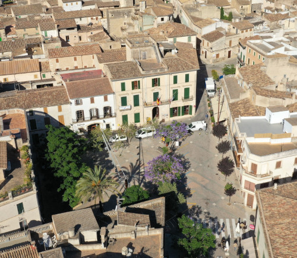

Sobre nosaltres

Porreres és gastronomia és un espai per donar a conèixer els productes gastronòmics del poble de Porreres, situat al pla de Mallorca a les Illes Balears.
Dins aquest portal podreu trobar els productes típics elaborats localment, així com informació addicional sobre la seva elaboració. Restaurants, bars, carnisseries, agricultors... tots ells elaboren o produeixen diàriament productes locals de màxima qualitat.
No esperis més i descobreix les meravelles que estan esperant la teva visita!